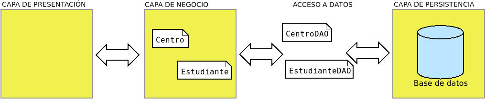

4.5. Programación con conectores#
Como se ha podido ver hasta aquí, el acceso de una aplicación a una base de datos relacional es relativamente sencillo y medianamente semejante sea cual sea el lenguaje de programación y el SGBD. Por tanto, el usar de modo básico conectores no entraña excesiva dificultad. Lo complicado, en realidad, es abstraer al resto del programa del acceso, de modo que logremos que manipule puramente objetos, aunque la información no esté almacenada según este modelo en la base de datos.
Así pues, el propósito a seguir cuando se codifica una aplicación es que todas las particularidades del acceso a datos estén reducidas a un paquete dentro de la aplicación (p.ej. llamado backend), fuera del cual no haya otra cosa que objetos.
A este respecto, podríamos estar tentados de usar el antipatrón God Class, pero este sólo no nos dará quebraderos de cabeza en aplicaciones muy simples que no se prevee que crezcan en el futuro.
Ver también
Todo el código que se describe y comenta en este apartado está en el repositorio de GitHub TestDAO. Se recomienda descargarlo para repasar mejor las explicaciones.
4.5.1. Patrón DAO#
Uno de los patrones más usados para lograr la abstracción es el patrón DAO, que se encarga de tomar los objetos de la capa de negocio y trasladarlos al soporte de persistencia o viceversa. Retomando el ya manido ejemplo de centros y alumnos:

Este patrón básicamente:
Define una interfaz para establecer las operaciones CRUD y, quizás, algunas consultas más específicas.
Define clases (
CentroDAO,EstudianteDAO) que implementan la interfaz anterior para el soporte de datos que utilice la aplicación, el cual forzosamente no tiene por qué ser una base de datos relacional. Un cambio en el soporte implica rehacer estas implementaciones, sin alterar el resto de la aplicación.El resto de la aplicación se encarga de utilizar la interfaz, por lo que es ajena a la implementación para un soporte particular.
Por lo general, aunque no forzosamente, cada clase del modelo tendrá asociada
una clase DAO. Recordemos las clases del modelo (Centro y
Estudiante), aunque en esta ocasión para intentar uniformizar la
implementación forzaremos a que ambas deriven de una interfaz que nos asegura que
ambas manejan de igual modo su identificador:
public interface Entity {
public Long getId();
public void setId(Long id);
}
La clase Centro ya se definió anteriormente.
mientras que Estudiante es esta otra:
public class Estudiante implements Entity {
/**
* Identificador del estudiante.
*/
private Long id;
/**
* Nombre completo del estudiante.
*/
private String nombre;
/**
* Fecha de nacimiento del estudiante.
*/
private LocalDate nacimiento;
/**
* Centro al que está adscrito.
*/
private Centro centro;
public Estudiante() {
super();
}
/**
* Carga los datos del estudiante.
* @param id El identificador del estudiante.
* @param nombre El nombre del estudiante.
* @param nacimiento La fecha de nacimiento.
* @param centro El centro al que está adscrito.
* @return El propio objeto.
*/
public Estudiante cargarDatos(Long id, String nombre, LocalDate nacimiento, Centro centro) {
setId(id);
setNombre(nombre);
setNacimiento(nacimiento);
setCentro(centro);
return this;
}
/**
* Constructor que carga todos los datos.
* @param id El identificador del estudiante.
* @param nombre El nombre del estudiante.
* @param nacimiento La fecha de nacimiento.
* @param centro El centro al que está adscrito.
* @return El propio objeto.
*/
public Estudiante(Long id, String nombre, LocalDate nacimiento, Centro centro) {
this.cargarDatos(id, nombre, nacimiento, centro);
}
@Override
public Long getId() {
return id;
}
@Override
public void setId(Long id) {
this.id = id;
}
public String getNombre() {
return nombre;
}
public void setNombre(String nombre) {
this.nombre = nombre;
}
public LocalDate getNacimiento() {
return nacimiento;
}
public void setNacimiento(LocalDate nacimiento) {
this.nacimiento = nacimiento;
}
public Centro getCentro() {
return centro;
}
public void setCentro(Centro centro) {
this.centro = centro;
}
@Override
public String toString() {
LocalDate hoy = LocalDate.now();
return String.format("%s (%d años)", getNombre(), ChronoUnit.YEARS.between(getNacimiento(), hoy));
}
}
Este es el modelo. Ahora necesitamos implementar el acceso a los datos. Eso
requiere definir la interfaz para las operaciones CRUD, que en un alarde de
originalidad llamaremos Crud, y dos clases DAO, CentroSqlDAO y
EstudianteSqlDAO. La interfaz podemos establecerla como estimemos mejor,
mientras recoja todas las operaciones necesarias. Por ejemplo:
public interface Crud<T extends Entity> {
/**
* Obtiene una entidad a partir de su identificador.
* @param id Identificador de la entidad.
* @return La entidad requerida.
* @throws DataAccessException Si hubo algún problema en el acceso a los datos.
*/
public Optional<T> get(Long id) throws DataAccessException;
/**
* Obtiene la relación completa de entidades de un tipo.
* @return Una lista con todas las entidades.
* @throws DataAccessException Si hubo algún problema en el acceso a los datos.
*/
public List<T> get() throws DataAccessException;
/**
* Borra una entidad con un determinado identificador.
* @param id Identificador de la entidad.
* @throws DataAccessException Si hubo algún problema en el acceso a los datos.
*/
public void delete(Long id) throws DataAccessException;
/**
* Borra una entidad.
* @param obj La entidad que se quiere borrar.
* @throws DataAccessException Si hubo algún problema en el acceso a los datos.
*/
default void delete(T obj) throws DataAccessException {
delete(obj.getId());
}
/**
* Agrega una entidad a la base de datos.
* @param obj La entidad que se quiere agregar.
* @throws DataAccessException Si hubo algún problema en el acceso o ya existía una entidad con ese identificador.
*/
public void insert(T obj) throws DataAccessException;
/**
* Agrega una multitud de entidades de un determinado tipo a la base de datos.
* @param objs Las entidades a agregar.
* @throws DataAccessException Si hubo algún problema en el acceso o ya existía alguna de las entidades.
*/
default void insert(Iterable<T> objs) throws DataAccessException {
for(T obj: objs) insert(obj);
}
/**
* Agrega un array de entidades a la base de datos.
* @param objs Las entidades a agregar.
* @throws DataAccessException Si hubo algún problema en el acceso o ya existía alguna de las entidades.
*/
default void insert(T[] objs) throws DataAccessException {
insert(Arrays.asList(objs));
}
/**
* Actualiza los campos de una entidad cuyo identificador no ha cambiado.
* @param obj La entidad con los valores actualizados.
* @throws DataAccessException Si hubo algún problema en el acceso.
*/
public void update(T obj) throws DataAccessException;
/**
* Actualiza el identificador de una entidad.
* @param oldId El valor antiguo del identificador.
* @param newId El nuevo valor de identificador.
* @throws DataAccessException Si hubo algún problema en el acceso.
*/
public void update(Long oldId, Long newId) throws DataAccessException;
/**
* Actualiza el identificador de una entidad.
* @param obj La entidad con el identificador sin actualizar.
* @param newId El nuevo valor de identificador.
* @throws DataAccessException Si hubo algún problema en el acceso.
*/
default void update(T obj, Long newId) throws DataAccessException {
update(obj.getId(), newId);
}
}
Aclaración
Esta interfaz no tiene por qué ser definida exactamente así: podría definirse otra que satisfaga también la necesidad de implementar las cuatro operaciones básicas. Por ejemplo, los métodos que obtienen todas las entidades de un tipo podrían devolverlas en forma de Stream en vez de List.
Como puede comprobarse, tanto las definiciones de las clases como la interfaz son independientes de cuál sea el soporte de almacenamiento y responden las primeras a la lógica de la aplicación y la segunda a la necesidad de obtención de datos almacenados.
Nótese que la interfaz es genérica, porque tiene que servir para cualquier tipo de objeto que quiera almacenarse en la base de datos. En nuestro ejemplo, se particularizará para Centro y para Estudiante.
Llegamos por fin a la parte en la que implementamos la lógica de la persistencia. Necesitamos, en principio, tres clases:
Una clase (llamémosla
Conexion) que abstraiga de la creación y uso del pool de conexiones. Recordemos que ya hemos discutido sobre cómo afinar esto dentro del epígrafe anterior.Una clase que implemente las operaciones CRUD para
Centro.Una segunda clase que implemente las operaciones CRUD para
Estudiante.
En definitiva:
Clase del modelo |
Clase del patrón |
Descripción |
|---|---|---|
- |
Conexion |
Se encarga de establecer la conexión. |
Centro |
CentroSqlDao |
Acceso a la tabla Centro. |
Estudiante |
EstudianteSqlDao |
Acceso a la tabla Estudiante. |
Si partimos de que en ambas clases DAO tenemos un método .getConnection()
que nos proporciona una objeto Connection para realizar las operaciones
CRUD[1], la implementación es trivial. Por ejemplo:
@Override
public void delete(Long id) throws DataAccessException {
String sqlString = "DELETE FROM Centro WHERE id = ?";
try(Connection conn = getConnection()) {
try(PreparedStatement pstmt = conn.prepareStatement(sqlString)) {
pstmt.setLong(1, id);
boolean deleted = pstmt.executeUpdate() > 0;
if(deleted) {
// Exito
} else {
logger.debug("Borrado fallido: el centro con ID={} no existe".formatted(id));
}
}
}
catch(SQLException e) {
// Fracaso por algún error de acceso a la base de datos.
throw new DataAccessException("Borrado fallido del centro con ID=%d: error en la base de datos".formatted(id), e);
}
}
El método (que implementa el método de borrado que declara Crud<T>) no tiene
ninguna dificultad y todos los demás tendrán un aspecto semejante. La miga está
realmente en lo que se ha dejado de hacer:
Por un lado, que la operación tenga aparentemente éxito no asegura que se lleve a cabo de forma efectiva, ya que esta operación podría formar parte de una transacción en la que se realizan varias; y el fracaso de otra podría forzar a que la base de datos no confirmara esta operación. Precisamente por eso, no hemos hecho que la operación devuelva un valor booleano ni hemos aún resuelto qué hacer cuando deleted es
true.Lo realmente complicado no está resuelto: el método
getConnection(). ¿Cómo obtenemos la conexión?
Analicemos esto segundo. Podríamos pensar en pasar una conexión al constructor para tenerla disponible durante la vida del objeto DAO, pero eso nos obligaría a rescribir el código anterior para no cerrar la conexión… y acordarnos de cerrarla donde tocara. O podríamos pasar al constructor un DataSource y que el método creara un objeto Connection cada vez que lo invocamos, así podríamos dejar el código como está. Pero esto tendría un problema añadido: cada operación abriría y cerraría su propia conexión, lo que impide que dos o más operaciones puedan constituir una única transacción. En definitiva, lo primero nos obligaría a estar muy atentos a abrir y cerrar conexiones manualmente (lo cual es un código muy propenso a errores involuntarios); y lo segundo es, directamente, inasumible.
Afortunadamente, la solución al problema de la conexión ya la tenemos, nuestro gestor de transacciones: soporta múltiples bases de datos (asociando una clave a cada uno de ellos) y múltiples hilos (por si realizamos programación concurrente). Además, lo programamos de modo que la conexión que ofrece está protegida contra cierres manuales, ya que es el gestor el que se encarga de abrirla y cerrarla. Por tanto, para resolver el problema y complementar este patrón nos basta con usar ConnectionPool y definirle su TransactionManager correspondiente.
Así pues, la clase Conexion puede ser simplemente una clase Singleton que
establezca la conexión gracias a un ConnectionPool que utilice un
TransactionManager:
/**
* Clase encargada de establecer la conexión a la base de datos.
* Para una única base de datos, puede usarse el patrón Singleton,
* en vez del Multiton que se encuentra en TestDao.
* Se basa en el uso de ConnectionPool y TransactionManager.
*/
public class Conexion implements AutoCloseable {
/** Clave que identifica esta clase */
public static final String KEY = new Object().toString();
private static Conexion instance;
private final ConnectionPool cp;
private Conexion(String dbUrl, String user, String password) {
// Pool de conexiones con HikariCP
cp = ConnectionPool.create(Conexion.KEY, dbUrl, user, password);
// Usamos el gestor de transacciones
// con un listener para gestionar registros diferidos
cp.initTransactionManager(Map.of(
LoggingManager.KEY, new LoggingManager()
));
}
/**
* Crea el objeto Singleton a partir de los datos suministrados.
* @param dbUrl URL de conexión.
* @param user Usuario de conexión a la base de datos.
* @param password Contraseña.
* @throws IllegalStateException Si el objeto ya fue creado.
* @return El objeto creado
*/
public static Conexion create(String dbUrl, String user, String password) {
if(instance != null) throw new IllegalStateException("Ya se creó la conexión");
instance = new Conexion(dbUrl, user, password);
return instance;
}
/**
* Devuelve el objeto de Conexion.
* @param key Clave que identifica la conexión. En realidad, no es necesaria
* al ser esto un patrón Singleton, pero se obliga a usar este parámetro por
* compatibilidad con el código de TestDAO.
* @throws IllegalStateException Si el objeto no se había creado antes.
* @return El objeto solicitado
*/
public static Conexion get(String key) {
if(instance == null) throw new IllegalStateException("No existe ningún objeto de Conexion");
if(!KEY.equals(key)) throw new IllegalArgumentException("La clave es inválida. Use la definida en la propia clase");
return instance;
}
/**
* Inicializa la base de datos con el esquema proporcionado
* @param schema El guion SQL con el esquema y los datos iniciales.
* @return La propia conexión para encadenar llamadas.
*/
public Conexion initialize(InputStream schema) throws DataAccessException {
Objects.requireNonNull(schema, "El esquema no puede ser nulo");
transaction(ctxt -> {
Connection conn = ctxt.connection();
// Si la base de datos ya está inicializada, no hacemos nada.
if(SqlUtils.isDatabaseEmpty(conn)) return;
try {
SqlUtils.executeSQL(conn, schema);
} catch(SQLException e) {
throw new DataAccessException("Error al crear el esquema en la base de datos", e);
} catch(IOException e) {
throw new RuntimeException("Error al intentar leer el esquema", e);
}
});
return this;
}
/**
* Informa de si el objeto (o sea, el {@link ConnectionPool} que maneja) sigue abierto
* @return {@code true} si continúa abierto.
*/
public boolean isOpen() {
return cp.isOpen();
}
/**
* Cierra el objeto cerrando el {@link ConnectionPool} que maneja)
*/
@Override
public void close() {
cp.close();
}
/**
* Abre, usando el {@link TransactionManager} asociado, una transacción que devuelve resultado
* @param <T> El tipo que dato que devuelve
* @param operations Las operaciones que constituyen la transacción.
@return Los datos devueltos por la transacción.
* @throws IllegalStateSxception Si la conexión ya está cerrada.
*/
public <T> T transactionR(TransactionableR<T> operations) throws DataAccessException {
if(!isOpen()) throw new IllegalStateException("La conexión está cerrada");
return cp.getTransactionManager().transaction(operations);
}
/**
* Abre, usando el {@link TransactionManager} asociado, una transacción.
* @param operations Las operaciones que constituyen la transacción.
* @throws IllegalStateException Si la conexión ya está cerrada.
*/
public void transaction(Transactionable operations) throws DataAccessException {
if(!isOpen()) throw new IllegalStateException("La conexión está cerrada");
cp.getTransactionManager().transaction(operations);
}
/**
* Devuelve la conexión asociada a la transacción activa.
* @return La conexión solicitada
* @throws IllegalStateException Si la conexión ya está cerrada o no hay conexión activa.
*/
public Connection getConnection() {
if(!isOpen()) throw new IllegalStateException("La conexión está cerrada");
return cp.getTransactionManager().getConnection();
}
/**
* Permite acceder cómodamente al gestor de registros diferidos.
* Es útil cuando se desea registrar mensajes sólo cuando se conoce
* la suerte de la transacción.
* @return El gestor de registros solicitado.
*/
public LoggingManager getLoggingManager() {
if(!isOpen()) throw new IllegalStateException("La conexión está cerrada");
return cp.getTransactionManager().getListener(LoggingManager.KEY, LoggingManager.class);
}
}
Nota
En TestDAO la clase implementa el patrón Multiton, aun no siendo necesario. Esta que se muestra aquí es una simplificación.
Con estos mimbres, ya podemos rematar nuestro patrón DAO, puesto que la conexión
que necesitamos, podremos obtenerla de la clase Conexion. Para simplificar
podemos definir una clase base:
/**
* Base para la construcción de todas las clases DAO.
* <p>Proporciona el constructor y métodos para simplificar
* el acceso a la conexión y al gestor de registros diferidos.
*/
public abstract class BaseDao<T extends Entity> implements Crud<T> {
/** Clave que identifica la conexión */
private final Conexion cx;
/**
* Constructor
* @param key Clave que identifica la conexión.
*/
protected BaseDao(String key) {
cx = Conexion.get(key);
}
/**
* Obtiene el {@link LoggingManager} asociado a la conexión actual.
* @return El gestor de logging solicitado.
*/
protected LoggingManager getLoggingManager() {
return cx.getLoggingManager();
}
/**
* Obtiene la conexión asociada a la transacción actual.
* @return La conexión solicitada.
*/
protected Connection getConnection() {
return cx.getConnection();
}
}
Esta base es muy simple, y simplifica la construcción y el acceso al objeto
Connection y al gestor de registros para abstraer a estos objetos de la
existencia del propio objeto Conexion.
Prudencia
Obsérvese que para obtener la conexión con la que los DAO implementan sus operaciones es necesario que haya una transacción abierta.
Ahora podemos codificar las dos clases DAO que implementan la interfaz CRUD:
/**
* Implementación de {@link Crud} para la entidad {@link Centro} usando SQL.
* Esta clase proporciona métodos para realizar operaciones CRUD sobre centros
* en una base de datos relacional.
*/
public class CentroSqlDao extends BaseDao<Centro> {
private static final Logger logger = LoggerFactory.getLogger(CentroSqlDao.class);
/**
* Constructor que inicializa el proveedor de conexiones con una conexión existente.
* @param key La clave de la conexión a usar.
*/
public CentroSqlDao(String key) {
super(key);
}
/**
* Convierte un {@link ResultSet} en un objeto {@link Centro}.
*
* @param rs El {@link ResultSet} que contiene los datos del centro.
* @return Un objeto {@link Centro} con los datos del {@link ResultSet}.
* @throws SQLException Si ocurre un error al acceder a los datos del {@link ResultSet}.
*/
static Centro resultSetToCentro(ResultSet rs, String prefix) throws SQLException {
Long id = rs.getLong(prefix + "id");
String nombre = rs.getString(prefix + "nombre");
Titularidad titularidad = Titularidad.fromString(rs.getString(prefix + "titularidad"));
return new Centro(id, nombre, titularidad);
}
/**
* Establece los parámetros de un {@link PreparedStatement} con los datos de un {@link Centro}.
*
* @param pstmt El {@link PreparedStatement} donde se establecerán los parámetros.
* @param centro El objeto {@link Centro} cuyos datos se usarán para establecer los parámetros.
* @throws SQLException Si ocurre un error al establecer los parámetros en el {@link PreparedStatement}.
*/
private static void centroToParams(PreparedStatement pstmt, Centro centro) throws SQLException {
pstmt.setString(1, centro.getNombre());
pstmt.setString(2, centro.getTitularidad().toString());
// En este caso el ID siempre tiene valor, con lo que puede usarse directamente setInt.
pstmt.setObject(3, centro.getId(), Types.BIGINT);
}
@Override
public Optional<Centro> get(Long id) throws DataAccessException {
String sqlString = "SELECT * FROM Centro WHERE id = ?";
try(Connection conn = getConnection()) {
try(PreparedStatement pstmt = conn.prepareStatement(sqlString)) {
pstmt.setLong(1, id);
try(ResultSet rs = pstmt.executeQuery()) {
Centro centro = rs.next() ? resultSetToCentro(rs, "") : null;
if(centro == null) logger.trace("Centro con ID={} no encontrado", id);
else logger.trace("Centro con ID={} encontrado", id);
return Optional.ofNullable(centro);
}
}
}
catch(SQLException e) {
throw new DataAccessException("Imposible obtener el centro", e);
}
}
@Override
public List<Centro> get() throws DataAccessException {
String sqlString = "SELECT * FROM Centro";
List<Centro> centros = new ArrayList<>();
try(Connection conn = getConnection()) {
try(Statement pstmt = conn.createStatement()) {
try(ResultSet rs = pstmt.executeQuery(sqlString)) {
while(rs.next()) {
centros.add(resultSetToCentro(rs, ""));
}
logger.trace("Obtenidos {} centros", centros.size());
return centros;
}
}
}
catch(SQLException e) {
throw new DataAccessException("Imposible obtener el listado de centros", e);
}
}
@Override
public void delete(Long id) throws DataAccessException {
String sqlString = "DELETE FROM Centro WHERE id = ?";
LoggingManager lm = getLoggingManager();
try(Connection conn = getConnection()) {
try(PreparedStatement pstmt = conn.prepareStatement(sqlString)) {
pstmt.setLong(1, id);
boolean deleted = pstmt.executeUpdate() > 0;
if(deleted) {
lm.sendMessage(
getClass(),
Level.DEBUG,
"Centro con ID=%d borrado".formatted(id),
"Trasacción fallida: Centro con ID=%d no se llega a borrar".formatted(id)
);
}
else logger.trace("Centro con ID={} no encontrado", id);
}
}
catch(SQLException e) {
throw new DataAccessException("Imposible borrar el centro con ID=%d".formatted(id), e);
}
}
@Override
public void insert(Centro centro) throws DataAccessException {
String sqlString = "INSERT INTO Centro (nombre, titularidad, id) VALUES (?, ?, ?)";
LoggingManager lm = getLoggingManager();
try(Connection conn = getConnection()) {
try(PreparedStatement pstmt = conn.prepareStatement(sqlString, Statement.RETURN_GENERATED_KEYS)) {
centroToParams(pstmt, centro);
pstmt.executeUpdate();
try(ResultSet rs = pstmt.getGeneratedKeys()) {
if(rs.next()) centro.setId(rs.getLong(1));
}
lm.sendMessage(
getClass(),
Level.DEBUG,
"Centro con ID=%d agregado".formatted(centro.getId()),
"Trasacción fallida: Centro con ID=%d no se llega a agregar".formatted(centro.getId())
);
}
}
catch(SQLException e) {
throw new DataAccessException("Imposible agregar el centro con ID=%d".formatted(centro.getId()), e);
}
}
@Override
public void update(Centro centro) throws DataAccessException {
String sqlString = "UPDATE Centro SET nombre = ?, titularidad = ? WHERE id = ?";
LoggingManager lm = getLoggingManager();
try(Connection conn = getConnection()) {
try(PreparedStatement pstmt = conn.prepareStatement(sqlString)) {
centroToParams(pstmt, centro);
boolean updated = pstmt.executeUpdate() > 0;
if(updated) {
lm.sendMessage(
getClass(),
Level.DEBUG,
"Centro con ID=%d actualizado".formatted(centro.getId()),
"Trasacción fallida: Centro con ID=%d no se llega a actualizar".formatted(centro.getId())
);
}
else logger.trace("Centro con ID={} no encontrado", centro.getId());
}
}
catch(SQLException e) {
throw new DataAccessException("Imposible actualizar el centro", e);
}
}
@Override
public void update(Long oldId, Long newId) throws DataAccessException {
String sqlString = "UPDATE Centro SET id_centro = ? WHERE id_centro = ?";
LoggingManager lm = getLoggingManager();
try(Connection conn = getConnection()) {
try(PreparedStatement pstmt = conn.prepareStatement(sqlString)) {
pstmt.setLong(1, oldId);
pstmt.setLong(2, newId);
boolean updated = pstmt.executeUpdate() > 0;
if(updated) {
lm.sendMessage(
getClass(),
Level.DEBUG,
"Centro con ID=%d actualizado a ID=%d".formatted(oldId, newId),
"Trasacción fallida: Centro con ID=%d no se llega a actualizar a ID=%d".formatted(oldId, newId)
);
}
else logger.trace("Centro con ID={} no encontrado", oldId);
}
}
catch(SQLException e) {
throw new DataAccessException("Imposible actualizar el identificador del centro", e);
}
}
}
Nota
Como la clase es tan sencilla (también la relativa a Estudiante),
usa SQL estándar y, por consiguiente, el código no depende del SGBD
particular. De ahí que hayamos elegido nombres que hacen referencia a SQL y
no a SQLite.
EstudianteSqlDao se implementará de modo análogo.
¿Cómo podríamos usar estas clases? Más o menos así:
try(Conexion cx = Conexion.create(dbUrl, dbUser, dbPassword)) {
cx.initialize(guion); // Suponemos que guion es un InputStream con el esquema.
CentroDao centroDao = new CentroDao(cx.KEY);
// Para realizar cualquier operación es necesario abrir una transacción.
cx.transaction(ctxt -> {
Centro astaroth = new Centro(11701164L, "IES Astaroth",Titularidad.PUBLICA);
centroDao.insert(astaroth);
});
// Más operaciones...
}
Finalmente, hay un último detalle. Al cargar un estudiante, la relación exige que se obtenga también el centro en el que está matriculado. Esta carga podría ser perezosa o inmediata. En nuestro caso, la carga es inmediata, ya que la perezosa implicaría la necesidad de implementar un proxy que permitiera diferir la carga hasta el momento en que se pidiera de manera efectiva en centro.
Además, la carga inmediata la hemos hecho mediante un JOIN y no mediante un segundo SELECT.
Nota
La librería sqlutils implementa, además, una suerte de ORM muy básico como prueba de concepto. Para ello sí se ha implementado la posibilidad de usar carga perezosa y puede echarse un ojo al código para hacerse una idea de cómo se ha hecho.
4.5.2. Conclusiones#
Toca para cerrar enumerar algunas conclusiones a las que hemos llegado:
Es indispensable usar un pool de conexiones para mejorar el rendimiento. De este modo, podemos cerrar las conexiones según la lógica de la aplicación sin preocuparnos de la penalización del rendimiento.
El soporte para transacciones es indispensable.
Debe separarse el acceso a la fuente de datos del resto de la aplicación. Un patrón muy socorrido, sobre todo en bases de datos, es el patrón DAO.
Gran parte de los retos que debemos resolver al programar con conectores, ya los resuelven las herramientas ORM, que trataremos a continuación, por lo que en muchas ocasiones en las que o bien el programador no es avezado o bien, aunque lo sea, el rendimiento no es crítico, es más inteligente utilizarlas.
Notas al pie